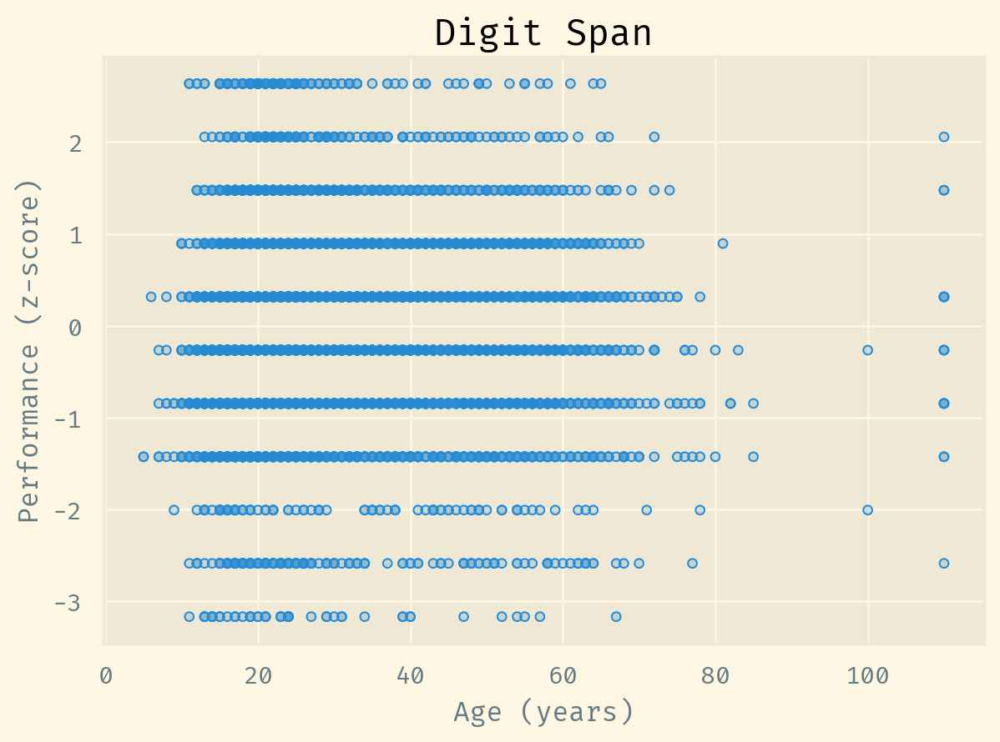
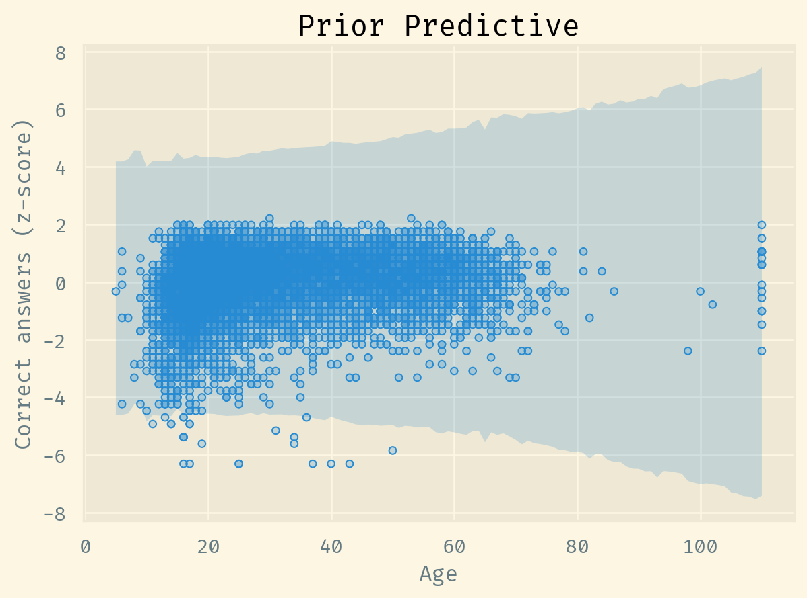

Decomposable non-monotonic models
causal
cognitive
modeling
Warning
This post is a work in progress.
Recently, I helped design an experiment measuring a binary response against a continuous delay time. If the user did not do the thing at time zero, then we delayed for a variable number of minutes before reminding them to do it. This delay had a non-monotonic relationship to the response: as the delay increased, the response responded differently. Initially, the response increased; then it peaked; and finally it decreased.
Causally, we may decompose this process into two: assuming the user forgot to/ could not do the thing at the time, as the delay increases, they 1) become more available for and 2) lose interest in doing the thing. This is a common phenomena in different time-based scenarios. In sports, the “aging curve” refers to how a player’s performance increases with age, then decreases. As the player gets older, they get 1) better at the sport and 2) physically weaker.
Andrew Gelman wrote about this a couple of times in his blog: see this post from 2018 and this one from 2023, as well as their comments, which also informed this post. Gelman proposed modeling these processes with:
\[g(x) = g_1(x) + g_2(x),\]
where
\(g_1(x)\) is a monotonically increasing function with a right asymptote; and
\(g_2(x)\) is a monotonically decreasing function with a left asymptote.
In this post, we will go over some of these models and test them on a dataset.
Digit Span
The Digit Span is a verbal working memory test, part of the Wechsler Adult Intelligence Scale (WAIS) and Wechsler Memory Scale (WMS) supertests. In the Digit Span test, subjects must repeat lists of digits, either in the same or reversed order.
The dataset for the study is available… (Hartshorne and Germine 2015)
Participants in Experiment 2 (N = 10,394; age range = 10–69 years old) […] were visitors to TestMyBrain.org, who took part in experiments in order to contribute to scientific research and in exchange for performance-related feedback.3 We continued data collection for each experiment for approximately 1 year, sufficient to obtain around 10,000 participants, which allowed fine- grained age- of-peak-performance analysis.
We could control for other variables, such as the computer type (desk or laptop) or gender, but let’s assume there are no confounding effects at play here.
Empirical models
Polynomials, smoothings, splines, etc.
Bootstrap
Estimates and standard errors for age of peak performance were calculated using a bootstrap resam- pling procedure identical to the one used in Experiment 1 but applied to raw performance data. To dampen noise, we smoothed means for each age using a moving 3-year window prior to identifying age of peak performance in each sample. Other methods of dampening noise provide similar results. In Experiment 2, age of peak performance was compared across tasks with paired t tests. Within- participant data were not available in Experiment 3.
shape: (81, 5) ┌─────┬──────────┬──────┬──────────────┬────────────┐ │ age ┆ mean ┆ se ┆ rolling_mean ┆ rolling_se │ │ --- ┆ --- ┆ --- ┆ --- ┆ --- │ │ i64 ┆ f64 ┆ f64 ┆ f64 ┆ f64 │ ╞═════╪══════════╪══════╪══════════════╪════════════╡ │ 5 ┆ 4.0 ┆ null ┆ null ┆ null │ │ 6 ┆ 7.0 ┆ null ┆ null ┆ null │ │ 7 ┆ 4.7501 ┆ null ┆ 5.250033 ┆ null │ │ 8 ┆ 5.409251 ┆ null ┆ 5.719784 ┆ null │ │ … ┆ … ┆ … ┆ … ┆ … │ │ 83 ┆ 6.0 ┆ null ┆ 6.333333 ┆ null │ │ 85 ┆ 4.494643 ┆ null ┆ 5.164881 ┆ null │ │ 100 ┆ 4.523819 ┆ null ┆ 5.006154 ┆ null │ │ 110 ┆ 6.141067 ┆ null ┆ 5.053176 ┆ null │ └─────┴──────────┴──────┴──────────────┴────────────┘
Gaussian Process
Decomposable models
Some commenters on Andrew’s blog…
All intervals are 80% credibility…
\[ \begin{align} g(x) = g_1(x) + g_2(x) \\ y \sim \mathrm{Normal}(g(x), \sigma) \\ \sigma \sim \mathrm{HalfNormal}(1) \end{align} \]
Additive
\[ g(x) = \alpha_1 \exp(-\lambda_1 x) + \alpha_2 + \alpha_3 \exp(\lambda_2 x) \]
With priors:
\[ \begin{align} \alpha \sim \mathrm{Normal}(0, 2) \\ \lambda \sim \mathrm{HalfNormal}(0.01) \\ \end{align} \]

Multiplicative
McElreath
\[ g(x) = \exp(-ax) (1 - exp(-bx))^c \]
Comparison
Let’s compare using LOO…
References
Hartshorne, Joshua K., and Laura T. Germine. 2015. “When Does Cognitive Functioning Peak? The Asynchronous Rise and Fall of Different Cognitive Abilities Across the Life Span.” Psychological Science 26 (4): 433–43. https://doi.org/10.1177/0956797614567339.
Citation
BibTeX citation:
@online{assunção2023,
author = {Assunção, Luís},
title = {Decomposable Non-Monotonic Models},
date = {2023-11-17},
url = {https://assuncaolfi.github.io/blog/non-monotonic},
langid = {en}
}
For attribution, please cite this work as:
Assunção, Luís. 2023. “Decomposable Non-Monotonic Models.”
November 17, 2023. https://assuncaolfi.github.io/blog/non-monotonic.